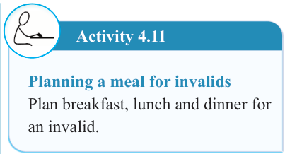

106


Food and Human Nutrition
Form Two

For example, individuals with heart diseases require low sodium meals. The following points should be considered when planning meals for the invalids.
(i) Meals should be soft to facilitate chewing and digestion.
(ii) Energy foods should be provided in small amounts as the invalids do not generally participate in activities that require much energy exertion.
(iii) Fatty foods, such as pastry dishes and deep-fried foods, should be avoided because they are not easily digested.
(iv) Meals should contain seasonings to
stimulate
the
appetite.
However, it should not contain too many spices or strong seasonings.
(v) Doctor’s
advice
should
be
considered when planning meals for the invalids.
Suggested suitable dishes for invalids
Mashed potatoes, boiled vegetables, milk puddings, rice puddings, fruit salads, steamed fish, poached eggs, minced meat stew, boiled chicken, enriched porridge, banana porridge with meat, banana with minced meat, boiled potatoes with peas, fruit salads, pawpaw fools, and mixed vegetable soup.
Activity 4.11
Planning a meal for invalids
Plan breakfast, lunch and dinner for an invalid.
Meals for convalescents
Convalescents are individuals who are recovering from illnesses. Meal planning for them is almost like that of the invalids. Their meals should be nutritionally dense, easily digestible and tailored to support healing, restore strength and boost immunity.
The
following
points
should
be
considered.
(i) The meals should contain more energy-giving
foods
because
the convalescent is recovering.
Thus, his or her body system requires more energy to perform its metabolic activities to support recovery and prevent weight loss.
(ii) Plan for meals that use various cooking
methods
such
as
roasting, frying and grilling to stimulate appetite and avoid a monotonous diet.
(iii) During meal planning, doctor’s advice
should
always
be
considered.

17/09/2025 16:30